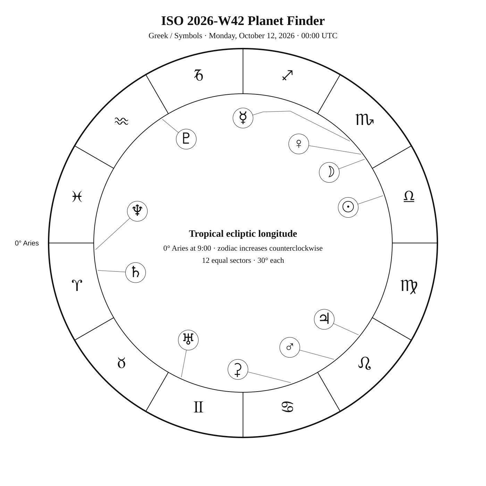
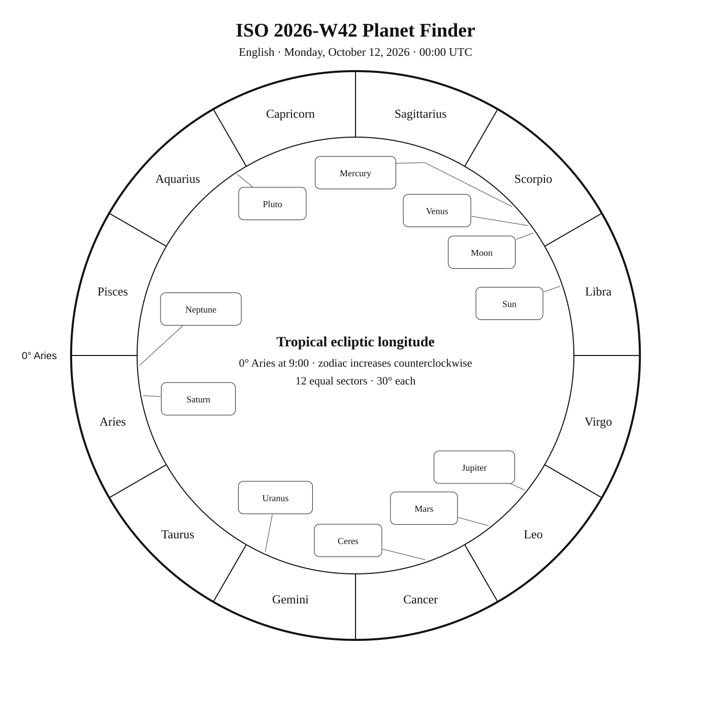
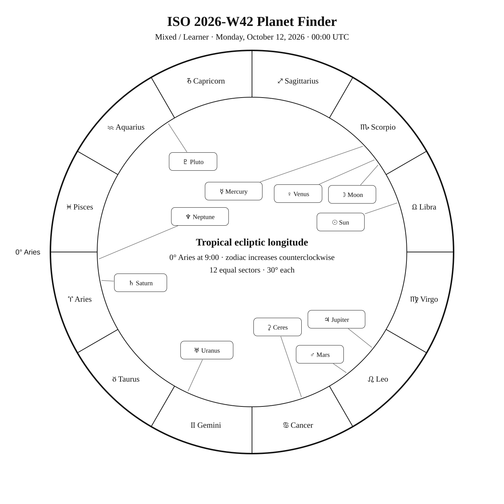

ISO 2026-W42
Week begins: Monday, October 12, 2026
Calendar
| Date | Zodiac day | Events |
|---|---|---|
| Mon, Oct 12, 2026 | ♎ 20Autumn 20 | Alnair (α Gru) —  2 1.7 — Southern Autumn 2 1.7 — Southern AutumnMercury greatest elongation — 10:03:19 UTC · Maximum angular separation from the Sun (25.2°); look near twilight, with visibility depending on location and season. |
| Tue, Oct 13, 2026 | ♎ 21Autumn 21 | |
| Wed, Oct 14, 2026 | ♎ 22Autumn 22 | C16 / NGC 7243 —  6 6.4 — Northern Autumn 6 6.4 — Northern Autumn |
| Thu, Oct 15, 2026 | ♎ 23Autumn 23 | α Tuc — 3 2.9 — Southern Autumn |
| Fri, Oct 16, 2026 | ♎ 24Autumn 24 | β Lac —  4 4.4 — Northern Autumn — in the Milky Way 4 4.4 — Northern Autumn — in the Milky Way |
| Sat, Oct 17, 2026 | ♎ 25Autumn 25 | Delta Cephei (δ Cephei) — — Northern Autumn |
| Sun, Oct 18, 2026 | ♎ 26Autumn 26 | 🌓 First Quarter — 16:12:41 UTC C63 / NGC 7293 · Helix Nebula / Finest NGC 2 / NGC 7293 · Helix — 7 6.5 — Tropical Autumnα Lac — 4 3.8 — Northern Autumn — in the Milky Wayβ PsA — 4 4.3 — Southern Autumn |
Weekly Solar-System Ephemeris
Snapshot: Week begins October 12, 2026, 00:00 UTC.
(-90° to +90°; defaults +45°, 21:00 LAT)
| Body | ☉︎ | ☽︎ | ☿︎ | ♀︎ | ♂︎ | ♃︎ | ♄︎ |
|---|---|---|---|---|---|---|---|
| Ecliptic | ♎︎ 18°41′ β −0°00′ | ♏︎ 4°35′ β −4°40′ | ♏︎ 13°41′ β −2°52′ | ♏︎ 7°00′ β −7°35′ | ♌︎ 7°58′ β +1°13′ | ♌︎ 21°28′ β +0°38′ | ♈︎ 10°43′ β −2°43′ |
| Observing |  | ☉︎ | 0.0 | ☉︎ | 1.0 | -1.9 | 0.4 |
| Rise | 06:24 | 08:03 | 08:47 | 08:25 | 00:07 | 01:21 | 17:25 |
| Set | 17:36 | 17:45 | 18:17 | 17:33 | 15:01 | 15:33 | 05:44 |
Extended targets:
| Body | ⚳︎ | ♅︎ | ♆︎ | ♇︎ |
|---|---|---|---|---|
| Ecliptic | ♋︎ 18°49′ β +1°15′ | ♊︎ 5°18′ β −0°09′ | ♈︎ 2°34′ β −1°25′ | ♒︎ 3°04′ β −4°17′ |
| Observing | 8.5 | 5.6 | 7.7 | 14.6 |
| Rise | 22:27 | 19:31 | 17:01 | 14:57 |
| Set | 14:00 | 10:38 | 05:04 | 23:36 |
β = ecliptic latitude (+ north, − south).
Rise and set are Local Apparent Time for the selected latitude.
Naked-eye observing uses the Sun’s altitude at the selected Monday observer time: Daylight (Sun ≥ −0.833°), Civil twilight (−0.833° to −6°), Nautical twilight (−6° to −12°), Astronomical twilight (−12° to −18°), and Night (below −18°).
Solar Glare identifies a body too close to the Sun when the sky-state rule does not already supersede its naked-eye classification.
The Sun’s observing status uses this same five-state sky classification.
Planet Finder



Sky Notes
Kilroy: Sky Notes · generated 2026-10-22 04:12:00 UTC
ISO 2026-W42 runs from October 12 through October 18. Uranus is about 4.5° in ecliptic longitude from Aldebaran in Taurus.

Naked eye: 🌓 First Quarter — 16:12:41 UTC. Moderate moonlight makes timing and local sky position important for faint targets. Use Alnair, α Tuc as the week’s fixed-sky framework.
Planets: Moon: In solar glare; magnitude -5.6; direct motion; 2.1% illuminated. Monday 00:00 UTC snapshot. Conjunction with Mercury in ecliptic longitude Oct 12 18:48 UTC. Conjunction with Venus in ecliptic longitude Oct 12 04:27 UTC. Mercury: Naked eye; magnitude 0.0; direct motion; 62.2% illuminated. Below the horizon at 21:00 local apparent solar time, 45°N. Monday 00:00 UTC snapshot. Conjunction with Moon in ecliptic longitude Oct 12 18:48 UTC. Venus: In solar glare; magnitude -4.5; retrograde motion; 5.7% illuminated. Monday 00:00 UTC snapshot. Conjunction with Moon in ecliptic longitude Oct 12 04:27 UTC. Mars: Naked eye; magnitude 1.0; direct motion; 90.0% illuminated. Below the horizon at 21:00 local apparent solar time, 45°N. Monday 00:00 UTC snapshot. Ceres: Telescope; magnitude 8.5; direct motion; 96.4% illuminated. Below the horizon at 21:00 local apparent solar time, 45°N. Monday 00:00 UTC snapshot. Jupiter: Naked eye; magnitude -1.9; direct motion; 99.4% illuminated. Below the horizon at 21:00 local apparent solar time, 45°N. Monday 00:00 UTC snapshot. Saturn: Naked eye; magnitude 0.4; retrograde motion; 100.0% illuminated. Monday 00:00 UTC snapshot. Uranus: Binoculars; magnitude 5.6; retrograde motion; 100.0% illuminated. Monday 00:00 UTC snapshot. Neptune: Telescope; magnitude 7.7; retrograde motion; 100.0% illuminated. Monday 00:00 UTC snapshot. Pluto: Substantial telescope; magnitude 14.6; retrograde motion; 100.0% illuminated. Monday 00:00 UTC snapshot. Station Oct 16 02:39 UTC: turns direct.


Binoculars: Trace Lacerta’s charted figure in the finder, then identify β Lac at its charted position. Trace Lacerta’s charted figure in the finder, then identify α Lac at its charted position. Trace Piscis Austrinus’s closed figure in the finder, then identify β PsA at its charted position.
Small telescope: NGC 7243: consult its dedicated finder and observing story for equipment guidance; Helix Nebula: consult its dedicated finder and observing story for equipment guidance
Substantial telescope: No fixed-sky Calendar object is classified as requiring a substantial telescope this week.
Other objects listed this week: None
Mercury
Mercury: naked eye at the Monday 00:00 UTC snapshot. At 45°N and 21:00 local apparent solar time, it is 28.4° below the horizon. Rises 08:47; sets 18:17 (45°N, local apparent solar time). Visual magnitude 0.0. The disk is 62.2% illuminated (gibbous). It is 25.2° from the Sun, on its east side. Motion is direct at 1.000° per day in ecliptic longitude at the snapshot. Position reference: Zubenelgenubi, 3.7° away. Conjunction with Moon in ecliptic longitude Oct 12 18:48 UTC. Mercury: 3.7° from Zubenelgenubi in the Pathfinder.
Venus
Venus: in solar glare at the Monday 00:00 UTC snapshot. Rises 08:25; sets 17:33 (45°N, local apparent solar time). Visual magnitude -4.5. The disk is 5.7% illuminated (crescent). It is 19.8° from the Sun, on its east side. Motion is retrograde at 0.341° per day in ecliptic longitude at the snapshot. Position reference: Zubenelgenubi, 11.6° away. Moon is 3.8° away at the snapshot. Conjunction with Moon in ecliptic longitude Oct 12 04:27 UTC. Venus: 11.6° from Zubenelgenubi in the Pathfinder.
Moon
Moon: in solar glare at the Monday 00:00 UTC snapshot. Rises 08:03; sets 17:45 (45°N, local apparent solar time). Visual magnitude -5.6. The disk is 2.1% illuminated (waxing crescent). It is 16.6° from the Sun, on its east side. Motion is direct at 12.692° per day in ecliptic longitude at the snapshot. Position reference: Spica, 10.7° away. Venus is 3.8° away at the snapshot. Conjunction with Mercury in ecliptic longitude Oct 12 18:48 UTC. Conjunction with Venus in ecliptic longitude Oct 12 04:27 UTC. Moon: 10.7° from Spica in the Pathfinder.
Mars
Mars: naked eye at the Monday 00:00 UTC snapshot. At 45°N and 21:00 local apparent solar time, it is 22.5° below the horizon. Rises 00:07; sets 15:01 (45°N, local apparent solar time). Visual magnitude 1.0. The disk is 90.0% illuminated (gibbous). It is 70.7° from the Sun, on its west side. Motion is direct at 0.559° per day in ecliptic longitude at the snapshot. Position reference: Acubens, 8.7° away. Mars: 8.7° from Acubens in the Pathfinder.
Jupiter
Jupiter: naked eye at the Monday 00:00 UTC snapshot. At 45°N and 21:00 local apparent solar time, it is 29.5° below the horizon. Rises 01:21; sets 15:33 (45°N, local apparent solar time). Visual magnitude -1.9. The disk is 99.4% illuminated (nearly full). It is 57.2° from the Sun, on its west side. Motion is direct at 0.162° per day in ecliptic longitude at the snapshot. Position reference: Regulus, 8.7° away. Jupiter: 8.7° from Regulus in the Pathfinder.
Saturn
Saturn: naked eye at the Monday 00:00 UTC snapshot. At 45°N and 21:00 local apparent solar time, it is 34.9° above the horizon. Rises 17:25; sets 05:44 (45°N, local apparent solar time). Visual magnitude 0.4. The disk is 100.0% illuminated (nearly full). It is 171.6° from the Sun, on its east side. Motion is retrograde at 0.077° per day in ecliptic longitude at the snapshot. Position reference: Diphda, 19.6° away. Saturn: 19.6° from Diphda in the Pathfinder.
Uranus
Uranus: binoculars at the Monday 00:00 UTC snapshot. At 45°N and 21:00 local apparent solar time, it is 13.9° above the horizon. Rises 19:31; sets 10:38 (45°N, local apparent solar time). Visual magnitude 5.6. The disk is 100.0% illuminated (nearly full). It is 133.4° from the Sun, on its west side. Motion is retrograde at 0.025° per day in ecliptic longitude at the snapshot. Position reference: Aldebaran, 7.2° away. Uranus: 7.2° from Aldebaran in the Pathfinder.
Neptune
Neptune: telescope at the Monday 00:00 UTC snapshot. At 45°N and 21:00 local apparent solar time, it is 37.1° above the horizon. Rises 17:01; sets 05:04 (45°N, local apparent solar time). Visual magnitude 7.7. The disk is 100.0% illuminated (nearly full). It is 163.8° from the Sun, on its east side. Motion is retrograde at 0.026° per day in ecliptic longitude at the snapshot. Position reference: Fumalsamakah, 17.1° away. Neptune: 17.1° from Fumalsamakah in the Pathfinder.
Ceres
Ceres: telescope at the Monday 00:00 UTC snapshot. At 45°N and 21:00 local apparent solar time, it is 11.7° below the horizon. Rises 22:27; sets 14:00 (45°N, local apparent solar time). Visual magnitude 8.5. The disk is 96.4% illuminated (gibbous). It is 89.9° from the Sun, on its west side. Motion is direct at 0.227° per day in ecliptic longitude at the snapshot. Position reference: Pollux, 7.2° away. Ceres: 7.2° from Pollux in the Pathfinder.
Pluto
Pluto: substantial telescope at the Monday 00:00 UTC snapshot. At 45°N and 21:00 local apparent solar time, it is 17.3° above the horizon. Rises 14:57; sets 23:36 (45°N, local apparent solar time). Visual magnitude 14.6. The disk is 100.0% illuminated (nearly full). It is 104.3° from the Sun, on its east side. Motion is retrograde at 0.002° per day in ecliptic longitude at the snapshot. Position reference: Dabih, 9.0° away. Station Oct 16 02:39 UTC: turns direct. Pluto: 9.0° from Dabih in the Pathfinder.
Highlights
Mercury
Naked eye; magnitude 0.0; direct motion; 62.2% illuminated. Below the horizon at 21:00 local apparent solar time, 45°N. Monday 00:00 UTC snapshot. Conjunction with Moon in ecliptic longitude Oct 12 18:48 UTC. Mercury: 3.7° from Zubenelgenubi in the Pathfinder.
Venus
In solar glare; magnitude -4.5; retrograde motion; 5.7% illuminated. Monday 00:00 UTC snapshot. Conjunction with Moon in ecliptic longitude Oct 12 04:27 UTC. Venus: 11.6° from Zubenelgenubi in the Pathfinder.
Moon
In solar glare; magnitude -5.6; direct motion; 2.1% illuminated. Monday 00:00 UTC snapshot. Conjunction with Mercury in ecliptic longitude Oct 12 18:48 UTC. Conjunction with Venus in ecliptic longitude Oct 12 04:27 UTC. Moon: 10.7° from Spica in the Pathfinder.
Mars
Naked eye; magnitude 1.0; direct motion; 90.0% illuminated. Below the horizon at 21:00 local apparent solar time, 45°N. Monday 00:00 UTC snapshot. Mars: 8.7° from Acubens in the Pathfinder.
Jupiter
Naked eye; magnitude -1.9; direct motion; 99.4% illuminated. Below the horizon at 21:00 local apparent solar time, 45°N. Monday 00:00 UTC snapshot. Jupiter: 8.7° from Regulus in the Pathfinder.
Saturn
Naked eye; magnitude 0.4; retrograde motion; 100.0% illuminated. Monday 00:00 UTC snapshot. Saturn: 19.6° from Diphda in the Pathfinder.
Uranus
Binoculars; magnitude 5.6; retrograde motion; 100.0% illuminated. Monday 00:00 UTC snapshot. Uranus: 7.2° from Aldebaran in the Pathfinder.
Neptune
Telescope; magnitude 7.7; retrograde motion; 100.0% illuminated. Monday 00:00 UTC snapshot. Neptune: 17.1° from Fumalsamakah in the Pathfinder.
Ceres
Telescope; magnitude 8.5; direct motion; 96.4% illuminated. Below the horizon at 21:00 local apparent solar time, 45°N. Monday 00:00 UTC snapshot. Ceres: 7.2° from Pollux in the Pathfinder.
Pluto
Substantial telescope; magnitude 14.6; retrograde motion; 100.0% illuminated. Monday 00:00 UTC snapshot. Station Oct 16 02:39 UTC: turns direct. Pluto: 9.0° from Dabih in the Pathfinder.